FleetMiraApi service¶
FleetMiraApi exposes FLEET Mira interfaces as an independent HTTPS service on the Enterprise server. Mobile apps and approved integrations can use a stable server address even when no desktop client is open.
Implementation and delivery status
This page describes the new development implementation for 1.1.0-beta9. An older installer does not automatically contain the component. The deployed installer must explicitly include FleetMiraApi. Source tests, installed server acceptance and Android-device testing are separate evidence.
Function, purpose and use cases¶
The module hosts existing mobile, device, driver and telematics APIs and the configured traffic-offence portal. Shared business logic and PostgreSQL remain unchanged. It serves Android/future iOS apps, customer integrations and central network access.
FleetMiraApi checks HTTPS, hostnames, tokens, scopes, user permissions and licence grants. It answers short business requests directly; FleetMiraWorker continues processing mobile imports and other central background work. The API service replaces neither PostgreSQL nor the worker or archive service. Accounting export remains an outgoing connection rather than a new API receiver.
The desktop's local driver API retains its loopback session. Central driver access uses separate integration tokens and explicit global data access. Basic and Pro retain their existing local SQLite/worker composition; the independent server service belongs to Enterprise.
How it works¶

Mermaid diagram source
flowchart TB
Mobile["DTCO Android app"] -->|"HTTPS"| API["FleetMiraApi"]
Integration["Approved integration"] -->|"HTTPS"| API
Browser["Browser: /health"] -->|"HTTPS"| API
API --> DB[("PostgreSQL: data and jobs")]
API --> Logs["Rotating service log"]
Admin["Enterprise administration"] --> DB
DB --> Worker["FleetMiraWorker: jobs with leases"]
Worker --> Processing["Import and background processing"]API, worker and PostgreSQL can initially share one server. They remain separate processes and services. Distributing them later requires appropriately provisioning intake storage, portal secrets and certificates on the relevant hosts.
For Android sign-in, the app opens a protected browser tab, receives a single-use code after authentication and exchanges it with S256 PKCE for tokens. Access tokens last 15 minutes; refresh tokens renew them within a maximum 30-day app session. Administration issues user-bound integration tokens with explicit scopes and validity. See the operations guide.
Prerequisites¶
| Area | Requirement |
|---|---|
| Operating system | An x64 Windows/Windows Server installation supported by Enterprise setup; the installer requires at least Windows version 10.0. Perform installed acceptance on the actual server version. |
| Installation | Enterprise application installer including component api; local administrator rights for installation and Windows service management. |
| Database | Reachable PostgreSQL with current Mira schema, application credentials and appropriate TLS configuration. Server setup uses PostgreSQL 17; regular schema migration requires the maintenance account. |
| Background processing | FleetMiraWorker using the same Enterprise database for imports and central jobs; archive functions additionally require a configured FleetMiraArchive service. |
| Licence and users | A valid central Enterprise entitlement with API access; active users with required business permissions. Administration requires users.manage and settings.manage. |
| HTTPS and DNS | A stable DNS name and matching valid certificate chain/private key; clients must trust the issuing CA. |
| Storage | Protected writable log/mobile intake directories. Defaults allow up to 1 GiB of logs, plus space for uploads, temporary files and business archives. Uploads are limited to 128 MiB per request. |
| Resources | Size CPU, RAM and I/O in addition to PostgreSQL/worker needs using actual concurrency. Source tests do not establish binding load or hardware approval. |
| Software modules | The complete Windows package bundles Python, pywin32, Flask, Cheroot with TLS, PostgreSQL drivers and shared business modules. No separate Python installation is required for the installed package. Optional zeroconf enables local service discovery. |
The service uses NT SERVICE\FleetMiraApi. Setup configures automatic startup and crash recovery. The account needs read access to its configuration/TLS files and modify access to logs/mobile intake storage. Worker private licence/backup keys are not transferred to the API service.
Network and firewall¶
| Direction | Connection | Allowance |
|---|---|---|
| Incoming to API server | TCP 8443 as the setup default, or the explicitly configured API port | Required client networks or the intended VPN/network access only. |
| API/worker/Enterprise clients to database | TCP 5432 or the configured PostgreSQL port | Authorized application hosts to PostgreSQL only; no public database exposure. |
| Optional local network | DNS-SD/mDNS, UDP 5353 | Only when local discovery is enabled; replaces neither HTTPS nor authentication and usually does not cross routed network boundaries. |
| Outgoing as needed | DNS, time synchronization and explicitly required device/external-system destinations | Existing operational policy; licence verification and outgoing background connectors remain in the worker. |
Setup does not automatically open an API port. Example restricted Windows firewall rule, to run in administrative PowerShell and adapt to your network:
New-NetFirewallRule -Name "FleetMiraApi-HTTPS" `
-DisplayName "Fleet Mira API HTTPS" `
-Direction Inbound -Action Allow -Protocol TCP -LocalPort 8443 `
-Profile Domain,Private -RemoteAddress 192.168.10.0/24
192.168.10.0/24 is an example network. For a different port, align the rule, service configuration and client URL. To roll back, remove only your own rule: Remove-NetFirewallRule -Name "FleetMiraApi-HTTPS". Fix certificate warnings instead of disabling verification. A reverse proxy needs a separately approved TLS/trust configuration; arbitrary X-Forwarded-* headers do not prove HTTPS.
Installation and configuration¶
- Back up database/configuration and satisfy the general Enterprise prerequisites. Use an installer that actually includes the new API service.
- Select Fleet Mira API Windows service in server setup, adding Worker and optionally Client for co-location. An unattended example is
/COMPONENTS=client,worker,api; provide database credentials through the protected/MIRACONFIGfile, never a password in process arguments. - Run regular PostgreSQL schema migration. PostgreSQL failure must never make the API create or use SQLite.
- Provision the certificate and key on the API server. Check DNS, certificate validity and service-account read permissions.
- In the Enterprise client, open Administration → Communication and integrations → API configuration. Enter, for example,
https://fleet.example.internal:8443, the bind address, port 8443 and server certificate/key paths. Review log limits/permitted Android scopes and save. - Open API service, select the instance and Reload. Without configuration the service remains
UNCONFIGURED; a running Windows service alone does not prove an open HTTPS port. - Create the required firewall rule and perform the browser test below from an intended client network.
- In API credentials, create integration tokens with owner, audience, scopes and validity, or connect the DTCO app through browser sign-in at its saved target. Never place tokens in URLs, screenshots or support logs.
Existing enabled mobile/telematics configurations can be adopted at first startup. Additional existing ports remain as compatibility listeners. Source files are not deleted. The operations guide explains adoption, permissions, revocation and rollback.
Setup in the administration interface¶
The administration interface belongs to the Enterprise client; it is not a public web dashboard. Sign in with an authorized user, expand Administration → Communication and integrations and open the required workspace. Sessions start with an empty workspace area; selecting a navigation entry opens its tab. These screenshots show the actual application components with isolated PostgreSQL example data. Adjust server names, paths and permissions to your installation.Click an image to open it at full resolution.
Save the API configuration¶

- URL: the HTTPS address reachable by clients, including its port, for example
https://fleet.example.internal:8443. - Server: the local bind address.
0.0.0.0binds all IPv4 interfaces; the firewall restricts access to approved networks. - Port: must match the URL and firewall; the example uses 8443.
- Certificate / Private key: absolute file paths on the API server. The certificate file contains the required certificate chain. The private key stays on the server and is never distributed to clients.
- Logs: retention in days, file size and total budget in MiB. Example values are 30 days, 50 MiB and 1024 MiB.
- Permissions / dtco-android: allowed scopes for browser-based app sign-in. Enable only required scopes; current user permissions further restrict access.
Save writes the central PostgreSQL configuration. Then select the instance under API service and choose Reload. Discard reloads saved values. When replacing certificates, also check file permissions, chain and validity. After saving, host validation accepts the host in the configured URL; do not assume alternate client addresses will work.
Check the Windows service and API instance¶

The Windows service is named FleetMiraApi and starts automatically. On the server, inspect it using services.msc or the local FLEET Mira API shortcut. The central API service page shows the reported instance and its latest heartbeat. An old heartbeat does not prove the process is still running.
| Action / indicator | Use |
|---|---|
| Refresh | Load instances and their latest reported state from PostgreSQL. |
| Diagnostics | Send a diagnostics request to the selected running instance. |
| RUNNING / listener_alive | The listener was active at the latest heartbeat. Also perform the HTTPS check. |
| UNCONFIGURED | Configuration or TLS setup is missing; the Windows service can run without an HTTPS listener. |
| licensed / logging_available | Inspect the reported operating entitlement and logging availability. |
| Pause API / Resume API | Temporarily suspend or resume business requests. The public process check at /health/live does not test business readiness. |
| DEBUG (15 min) | Temporarily enable additional technical logging for troubleshooting. |
| Reload | Reload saved configuration, then check heartbeat and HTTPS. |
These actions are processed as central requests. If the service is stopped or PostgreSQL is unavailable, use the local console or Windows service management. A successful database query does not replace a listener check.
Set up user-bound API credentials¶

Under API credentials → Create token, select the active owner, a meaningful label, the correct API type (mobile, devices, telematics or drivercard), required scopes and validity of 1–365 days. Set customer IDs or All customers according to the intended business access; mobile tokens do not support customer restrictions through this field. Telematics requires explicit global access.

The token secret is displayed once after creation. Transfer it securely to the intended integration and store it as a secret there; never include it in URLs, documentation or screenshots. The searchable list shows metadata. To remove access, select the credential, choose Revoke token and confirm. This does not extend or renew existing tokens.
For the DTCO Android app, browser-based sign-in is the normal workflow: choose the server address in the app, start browser sign-in and authenticate with the intended Mira user. The app automatically obtains tokens through the PKCE code exchange and handles renewal. Manually copying an integration token is unnecessary. Android scopes, active user permissions and the registered callback address must match the configured app.
Use logs for troubleshooting¶

Under Logs, select the instance and choose Refresh. Refresh automatically retrieves new sanitized lines regularly while the page is visible. Search and severity filters narrow the display; Export saves the displayed lines as JSON Lines. First compare the timestamp, HTTP status and technical event code with the reported failure; briefly enable DEBUG if needed and check again. Never include tokens, passwords or keys in support material.
Configure certificate trust on clients¶
For a private enterprise or test CA, verify the fingerprint and distribute the public CA certificate through the approved device-management process. Windows browsers need it in the appropriate trusted root store; Android devices require the corresponding managed or user CA configuration. The DTCO app accepts system and user CAs. Both server certificate and CA must be valid; the requested DNS name or IP address must appear in the server certificate SAN. Never install the private server or CA key on clients. Repeat the browser health check and app connection after distribution.
Fleet Mira Health in the browser¶
Open https://<Server>:8443/health. Fleet Mira Health is accessible without signing in and shows API, worker, PostgreSQL, current and last completed worker jobs, and resource measurements. The public view is English. Dark Material 3 is the default regardless of browser/system appearance; the appearance switch allows an explicit light selection, remembered in this browser.

| Area | Meaning |
|---|---|
| API / worker / PostgreSQL | State with icon, readable text and code; host, version and latest heartbeat. API heartbeats older than 45 seconds and worker heartbeats older than 60 seconds are out of date. |
| Worker jobs | Current and last completed job per worker with type, state, start, end and duration; queued/running counts. No payloads, user names or file names. |
| Host | Total/used RAM, CPU usage, logical and physical cores. Shared hosts are grouped. |
| Service process and disk | Process RAM, process CPU and available cores; total, used and free capacity on the disk containing that service's data directory. Process CPU: 100% represents one fully used logical core. |
| Database | Size of the actual connected PostgreSQL database. This does not measure free disk space on a remote database server. |
API and worker use bundled psutil outside browser requests, at most every ten seconds, and publish measurements through their heartbeats. Each sample identifies its time and host/service. Missing measurements are unavailable and old samples are marked. Operating-system metrics for a remote PostgreSQL host are not collected without a measurement source there. No additional firewall rule is needed.
The visible page updates every ten seconds without resetting focus or scroll position. Selecting text pauses updates. Refresh updates manually. During a database outage the public page remains accessible and shows the failure and available local API reports with their age. ERR_CONNECTION_REFUSED instead means no listener is responding: check the service and local console.
The desktop view has three large columns in this order: FleetMiraWorker, FleetMiraApi, PostgreSQL. Each service area combines its state and process measurements; database size is shown directly under PostgreSQL. Below are Server information with host and disk measurements and Jobs with queue counts and current/last jobs. Narrow screens stack these areas vertically.
PostgreSQL performance and Fleet Mira record totals¶
The PostgreSQL area additionally shows version, SELECT 1 response time, connections to the current database, visible active connections, server-wide connections, configured connection limit, cache hit ratio, transactions per second and deadlocks since the displayed statistics reset. Response time measures the query on an existing connection; transaction rate is averaged between two valid samples. After service start or a statistics reset, the rate is initially unavailable. The cache ratio describes PostgreSQL buffer access, not the operating-system cache. See the PostgreSQL documentation for statistics semantics and access rights.
The separate Fleet Mira: total records card sits immediately below Jobs in the lower right column. On narrow screens it also follows the jobs card directly. The PostgreSQL column contains database status, size and performance only. The records card counts exact table rows:
| Display | Source |
|---|---|
| Vehicles | fleet_vehicle, including archived vehicles |
| Personnel | fleet_person, including archived personnel records; not user accounts |
| DDD archives | ddd_archive, including soft-deleted archives; not individual tachograph facts |
| Licence checks | fleet_license_check, stored check events including negative results; not due dates |
| Cost entries | fleet_vehicle_cost_entry, including drafts, credits, reversals and archived entries; record counts rather than monetary totals |
The API heartbeat collects performance at most every 30 seconds and record totals at most every 60 seconds. Browser refresh does not initiate extra measurement queries. Connections and queries are time-bounded and read-only. Measurement errors affect displayed telemetry, not service operation. The API database user requires SELECT access to the five counted tables. No broader monitoring role is granted automatically. If other sessions' states are hidden, the active-session count is explicitly unavailable. Only aggregates, sample times and freshness are exposed; no names, query text or amounts are returned.
Protected logs¶
Connection opening to the local archive service tolerates temporarily missing or busy named-pipe instances within a five-second total deadline. Only opening is retried. Trust verification and the archive request then execute once; failures after sending do not automatically replay that archive call. Persistent service unavailability remains an error and uses bounded job retries. Signatures, independent checkpoints and permissions are not relaxed.
Under Jobs, the public view shows only the historical total of terminal failures and the last failed job with its type and finish time. It exposes no failure list, attempts, error codes or causes. After administrator sign-in, the ten latest failure cases including queued retries appear below the logs, with allowlisted codes and readable guidance. Payloads, user/file names and raw errors remain excluded. Neither restarts nor queue cleanup reset the failure total. Ready still describes service availability.
Automatic current-state checks are coalesced into one queued or running job per type and exact parameter set. A shared database lock also protects concurrent worker planners. This covers archive evidence checks, intake cleanup, mailbox/notification sweeps, backup retention, automatic download checks per task and approved GPS polls per connection. Explicit effective dates, individual vehicle/file requests, manual commands, backup creation and dated invoice processing remain independent. Different tasks or connections are never mixed. The next normal planning pass catches subsequent changes.
Cleanup retains every record. Only never-attempted, explicitly recognised redundant routine wake-ups can become CANCELLED with PERIODIC_SUPERSEDED. The newest queued entry in a group is kept; existing running or attempted work is protected instead. Failures, retries, leases and unknown parameters are unchanged. Preview writes no business data; applying cleanup is repeatable. Every worker planning the same database must use the updated version.
Missing or unreadable GPS keys require protected provisioning on the worker and a successful connection test. The connection becomes ACTION_REQUIRED, pausing periodic requests. Secret-store and archive-integrity failures are not retried automatically. Network failures retain bounded retries. Already queued scheduled downloads no longer execute disabled tasks. Failure history and archive checkpoints are neither deleted nor reset.
Sign in opens /health/login. Only an active Mira administrator with users.manage, settings.manage, local sign-in enabled and any mandatory password change completed can access up to 30 sanitized recent log entries. Integration tokens do not replace this sign-in. Afterwards the user's profile language and region apply; sessions expire after 30 minutes or Sign out. Account status and permissions are checked on every request. If the identity store fails, only the public view remains visible.


HTTP redirects such as 303 are redirects, not failed requests. Error codes receive understandable guidance. Images show the actual interfaces with isolated PostgreSQL example data.
For technical process checks, /health/live remains public. Non-HTML requests to /health retain the minimal JSON response for compatibility. Process liveness alone confirms neither licensing nor worker readiness. Service control and token administration retain their existing authorization requirements.
Public reachability check¶
The small unauthenticated process check remains available for monitoring and an initial HTTPS test:
https://fleet.example.internal:8443/health/live
{"ok":true,"service":"FleetMiraApi"}
This confirms HTTPS and a responding process. It does not confirm a valid license, current worker heartbeat or business readiness. Non-HTML requests to /health retain this minimal JSON response for compatibility. Requests to /api/devices without a token must return HTTP 401 when business operation is enabled; HTTP 503 is not a successful business test. Write/import tests belong in an approved isolated test environment.
Diagnose a stopped API service¶

On the server, open FLEET Mira API from the Start menu or run DLTNGDownloadTool.exe --api-console. The console displays separate API and worker cards, readable state descriptions, process IDs, the last Windows error code and recent sanitized API events. It refreshes every five seconds. For stopped or pending local services, the directly queried Windows state takes precedence over an old database heartbeat. A running process without a current heartbeat is not shown as business-ready.
Start service is available for a stopped API service; Stop service is available for a running service. Appropriate Windows rights are required. Permission failures produce a readable message. This local console has no authenticated Mira user and therefore uses English; central Enterprise administration uses the signed-in user's language. The image shows a running example service, not a control operation against production data.
| Observation | Next check |
|---|---|
| Connection refused / Windows service stopped | Open the local console, inspect the error code and logs, fix the cause and start the API service. |
| Timeout | Check routing, bind address and firewall access. |
| Certificate warning | Correct CA trust, SAN/server name, validity and certificate chain. |
| Not configured | Check certificate/key files, service account read permissions, port and saved configuration. |
| Out-of-date worker heartbeat | Check FleetMiraWorker on the server and its database connection. |
| Sign-in fails | Check active account, local sign-in, required password change and administrator permissions. |
| License unavailable | Check the central Enterprise license and worker license validation. |
| HTTP 400 | Use the configured server address and an allowed hostname. |
Monitoring, logs and troubleshooting¶
API service provides diagnose, pause/resume, bounded debug mode and reload. API credentials manages owners, grants, validity and revocation. Logs provides search, severity filtering, automatic refresh and sanitized row export. By default, logs/api/api.jsonl rotates daily and at 50 MiB; retention is at most 30 days with a 1024 MiB total budget. Debug mode ends after 15 minutes.
When API or database is unavailable, use the local FLEET Mira API shortcut or DLTNGDownloadTool.exe --api-console. It inspects the Windows service and protected local logs; start/stop requires appropriate Windows rights. A completely stopped remote service cannot start itself through its own HTTP endpoint.
The Health screenshots were captured directly from test server W25 on 8 November 2026. They show its actual reported operational data, including unchanged “Nicht verfügbar” (unavailable) values. The protected view uses the existing administrator’s German profile language. Metrics are snapshots, not guarantees for other installations.